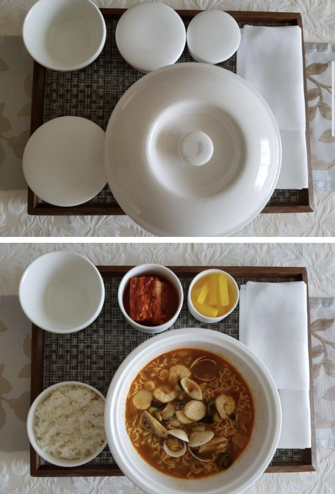
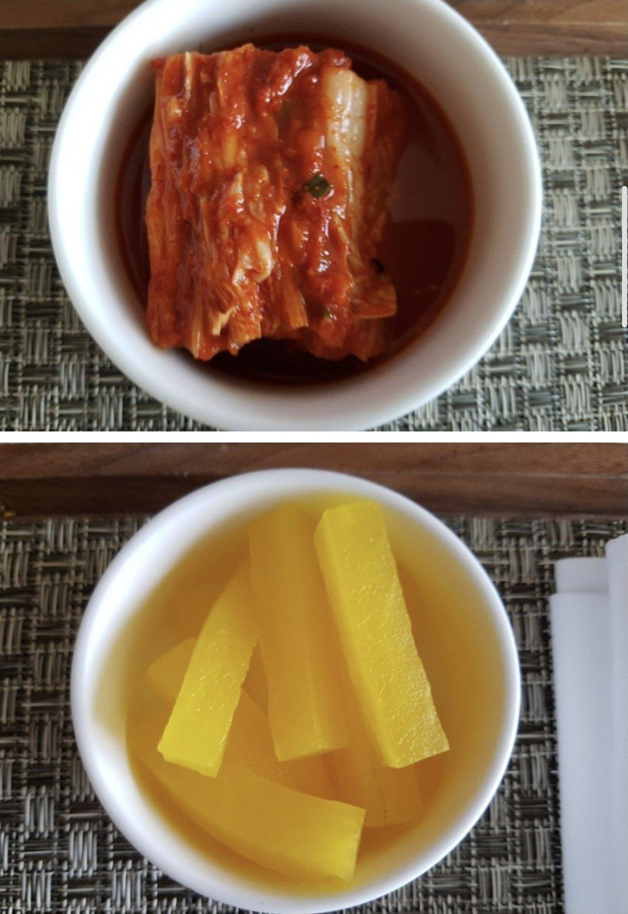
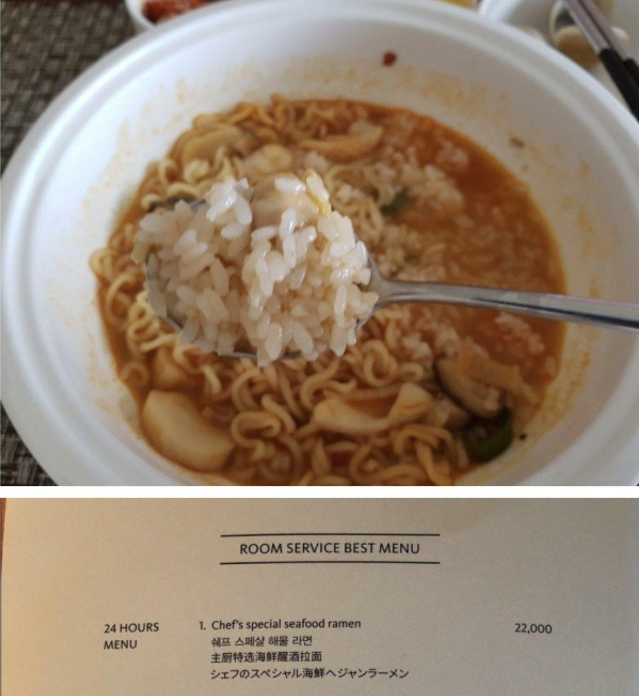

해물 라면 22,000원
최고급 호텔 + 24시간 룸서비스임 + 시키면 문 앞에까지 가져다 줌 + 정갈하고 해산물도 넣어서 끓여줌
https://m.bobaedream.co.kr/board/bbs_view/best/1003618



해물 라면 22,000원
최고급 호텔 + 24시간 룸서비스임 + 시키면 문 앞에까지 가져다 줌 + 정갈하고 해산물도 넣어서 끓여줌
https://m.bobaedream.co.kr/board/bbs_view/best/1003618
서비스료 생각하면 괜찮은데?
누나한테 시켜본다고 생각해봐라 얼마나 줘야 저정도 퀄이 나올지
오싹오싹
"빨아"
50cc
풀코스로 한발빼야함 ㅜ
호텔이라서 먹는거지 중식당에서 짬뽕먹는게 더 좋겠네
궁금한게 저런 룸서비스는 어디서 음식올리는거임? 보통 주방은 마감청소하잖아. 그리고 셰프가 24시대기하는거임??
셰프분들이 하는 음식은 시간 제한이 있고 24시간은 뭔가 직원분들이 아무나 간단하게 만들 수 있는 메뉴만 하는 거 아닐까?
24시간 메뉴가 따로 있고 한거보면 교대근무로 하지않을까
나이트쉐프가 따로있음
맛은 있는데 지갑이 아파
스페셜이 아니라 스페샬이네
생각보다 안비싸네
가는동안 안불나 ㅋㅋ
생각보다 싼데
가성비네 ㅋㅋ
괜찮은데?
???:쉐프, 해물라면 주문 들어왔습니다 일어나십쇼(새벽3시)
시켜먹어볼만할듯 ㅋㅋ
김치 왤케 적게주냐..
미리 많이 주세요 하면 많이 줌
서운할뻔
한번은 먹을듯 먹으면서 뻑예 소리 나올듯 진짜 ㅋㅌㅋㅋㅋㅋ
와비싸다 느낌은 아니네 요즘 무인라면 김밥천국이런데가도 기본라면 5 6천원하는시대이다보니
가져오는동안 뿔을꺼같아
근데 저정도 넣고 라면 끓이면 일반 식당가도 공기밥 포함 12000원씩은 받아먹을거 같아서 신라호텔이면 혜자로 보이네ㅋㅋㅋㅋㅋ
신포도같은데 조금만 식어도 존나 비릴거같은데
0하나 더붙었으면 개오바라고 할텐데 저정도면 좋은듯
내가 이해할 수 있는 영역이 아니네..
무슨라면이야? 신라면?
호텔가서 돈 아낄거면 여인숙 가시는게..
난 라면 그릇이 왜 왕뚜껑같냐
라면이 22000원이면 ㅋㅋㅋㅋ 차라리 그냥 컵라면 1500원에 사먹겠네
제일 맛있었던 짬뽕
1. 여름에 신라호텔 수영장 사이드에서 물놀이 하다가 먹은 짬뽕
2. 겨울에 신라호텔 수영장에서 물놀이하다 룸에 올라와서 먹은 룸서비스로 시킨 짬뽕
신라호텔 짬뽕은 진심 돈이 하나도 안아까움.
룸서비스 시키고 직원한테 팁 줄려고 했는데 호텔 정책상 팁 받으면 안된다고 거절하더란.
바지락을 넣은거 보니 맛잘알이네
10년전이면 비싸다했겠는데 지금 물가 수준으로 보면 5성급 호텔에서 저정도면 나쁘지않음